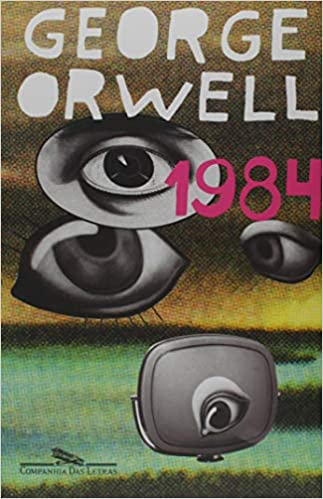

Meus livros
Acervo de obras literárias
O que define a arte dos livros vai muito além da leitura: são as histórias. Sou um grande apreciador de histórias, escritas através de diferentes perspectivas. Desde cedo, tive o privilégio de descobrir tal valor, por meio da leitura, e apaixonei-me por esse vasto universo. Construí essa estante para manter-me sempre perto dos meus livros e, com isso, eternizá-los, para que eu possa revisitá-los sempre que desejar. A maior virtude de uma pessoa é sua capacidade de amar. Confira minha lista de desejos para futuras leituras.
113 livros - 39179 páginas
Lendo atualmente

Contato de Emerência
Mary H. K. Choi
Contato de Emerência
Mary H. K. Choi
Lendo atualmente

Uma Ideia de Você
Robinne Lee
Uma Ideia de Você
Robinne Lee

1984
George Orwell
1984
George Orwell

Amor(es) Verdadeiro(s)
Taylor Jenkins Reid

Anna e o beijo Francês
Stephanie Perkins

A Biblioteca da Meia-Noite
Matt Haig

A Culpa É das Estrelas
John Green

A Garota que eu Quero
Markus Zusak

A Hipótese do Amor
Ali Hazelwood

A História de Nós Dois
Dani Atkins

A Insustentável Leveza do Ser
Milan Kundera

A Menina que Roubava Livros
Markus Zusak

A Monja e o Professor
Clóvis de B. Filho e Coen Rōshi

A Pequena Confeitaria de Paris
Julie Caplin

A Pequena Livraria dos Sonhos
Jenny Colgan

À Procura da Felicidade
Chris Gardner

À Procura de Audrey
Sophie Kinsella

A Segunda Guerra Mundial
Martin Gilbert

A Teoria de Tudo
Jane Hawking

A Última Música
Nicholas Sparks

Alta Fidelidade
Nick Hornby

Amor & Azeitonas
Jenna Evans Welch

Amor & Gelato
Jenna Evans Welch

Amor & Sorte
Jenna Evans Welch

Amy & Matthew
Cammie McGovern

Apenas amigos
Christina Lauren

As 100 Melhores Histórias da Mitologia
A. S. Franchini e Carmen Seganfredo

As Vantagens de ser Invisível
Stephen Chbosky

Beijos em Nova York
Catherine Rider

Belo mundo, onde você está
Sally Rooney

Bem-vindos à Livraria Hyunam-dong
Hwang Bo-Reum

Bom de Briga
Markus Zusak

Breaking Bad e a Filosofia
David R. Koepsell

Cidades de Papel
John Green

Cinquenta Tons de Cinza
E L James

Cinquenta Tons de Liberdade
E L James

Cinquenta Tons Mais Escuros
E L James

Clube do Livro dos Homens
Lyssa Kay Adams

Comer, Rezar, Amar
Elizabeth Gilbert

Como Eu Era Antes de Você
Jojo Moyes

Como Steve Jobs virou Steve Jobs
Brent Schlender e Rick Tetzeli

Daqui a Cinco Anos
Rebecca Serle

Deixe a Neve Cair
John Green, Lauren Myracle e Maureen Johnson

Depois Daquele Verão
Carley Fortune

Desculpa se te Chamo de Amor
Federico Moccia

Diário de uma paixão
Nicholas Sparks

Eleanor & Park
Rainbow Rowell

Encontros e Desencontros em Compostela
Graeme Simsion e Anne Buist

Eu e Esse Meu Coração
C. C. Hunter

Eu Sou o Mensageiro
Markus Zusak

Gente Ansiosa
Fredrik Backman

God Of War
Matthew Stover e Robert E. Vardeman

God Of War 2
Robert E. Vardeman

Larissa Start
Rafael Caputo
Livre
Cheryl Strayed

Luzes do Leste
Brittainy Cherry

Mais que Amigos
Lauren Layne

Missão Romance
Lyssa Kay Adams

Namorado de Aluguel
Kasie West

Não Conte a Ninguém
Harlan Coben

Noites de Tormenta
Nicholas Sparks

Nothing Less
Anna Todd

Nothing More
Anna Todd

No seu olhar
Nicholas Sparks

O Acordo
Elle Kennedy

O Ano em que Te Conheci
Cecelia Ahern

O Azarão
Markus Zusak

O Bicho-da-Seda
J. K. Rowling

O Café da Praia
Lucy Diamond

O Conto da Aia
Margaret Atwood

O Construtor De Pontes
Markus Zusak

O Homem Mais Inteligente da História
Augusto Cury

O Inocente
Harlan Coben

O Lado Bom da Vida
Matthew Quick

O Leitor do Trem das 6h27
Jean-Paul Didierlaurent

O Melhor de Mim
Nicholas Sparks

O Menino que Pintava Sonhos
Duca Leindecker

O Poder do Agora
Eckhart Tolle

O Primeiro Dia do Resto da Nossa Vida
Kate Eberlen

O Segundo Suspiro
Philippe Pozzo di Borgo

O Substituto
David Nicholls

O Teorema Katherine
John Green

Os Testamentos
Margaret Atwood

Observações em Verso e Proza
Paulo André Rockembach

Pessoas Normais
Sally Rooney

Por Lugares Incríveis
Jennifer Niven

Quem é você, Alasca?
John Green

Queria que Você Estivesse Aqui
Jodi Picoult

Queria que Você me Visse
Emery Lord

Resposta Certa
David Nicholls

Sapiens
Yuval Noah Harari

Seis Anos Depois
Harlan Coben

Sempre foi Você
Carrie Elks

Sherlock Holmes (Box)
Arthur Conan Doyle

Simplesmente Acontece
Cecelia Ahern

Só Escute
Sarah Dessen

Sou Louco por Você
Federico Moccia

Subindo pelas Paredes
Alice Clayton

Tartarugas até lá Embaixo
John Green

Técnicas de Invasão
Bruno Fraga

Tempestades do Sul
Brittainy Cherry

Teto Para Dois
Beth O'Leary

Todas as Coisas Belas
Matthew Quick

Todas as suas (Im)perfeições
Colleen Hoover

Um Dia
David Nicholls

Um Dia em Dezembro
Josie Silver

Um Instante de Felicidade
Federico Moccia

Um Lugar para o Amor
Sherryl Woods

Um Romântico Incorrigível
Devan Sipher

Uma Dor Tão Doce
David Nicholls

Uma Farsa de Amor na Espanha
Elena Armas

Uma Longa Queda
Nick Hornby

Will e Will
John Green e David Levithan
UB Social
Mateus Schwede